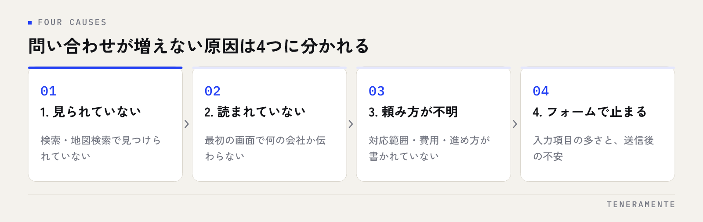

ホームページはあるのに問い合わせが来ない。この状態で最初に手を付けるべきは、デザインの作り直しではありません。結論から申し上げると、ホームページから問い合わせが増えない原因は、見られていない・読まれていない・頼み方が分からない・フォームで止まるの4つのどこかに収まります。どこで落ちているかを先に特定すれば、直す範囲はぐっと小さくなります。
📌 この記事の結論
問い合わせが増えないときは、作り直す前にどの段階で読者が離れているかを特定します。見られていないのか、開いたが読まれていないのか、何を頼めるか分からないのか、フォームで止まっているのか。原因の場所によって直す手は変わるので、順番を飛ばすと費用だけがかかります。確かめ方は店舗にホームページは必要かの判断でも触れています。
01ホームページから問い合わせが増えない原因は、4つに分かれる
「問い合わせが増えない」という一つの症状に見えても、中身は別の問題です。混ぜて考えると、関係のない場所を直すことになります。

第一に、そもそも見られていない。検索で上位に出ていない、地図検索に出ていない、名前で調べた人しか来ていない状態です。第二に、開いたが読まれていない。最初の画面で何の会社か分からず、数秒で戻られています。第三に、読まれたが頼み方が分からない。何を依頼できるのか、いくらくらいかかるのか、どう進むのかが書かれていないため、問い合わせる判断がつきません。第四に、問い合わせようとしたが止まった。フォームの入力項目が多すぎる、送信して何が起こるか分からない、スマートフォンで操作しづらいといった理由です。
この4つは、起きている場所が違うだけでなく、直す費用もまったく違います。四番目のフォームの問題なら半日の修正で変わる場合があり、一番目の集客の問題なら数か月かかります。先に調べるべきは、自社がどれに当たるかです。
02まず確かめる：見られていないのか、読まれていないのか
切り分けは、アクセス解析の数字を2つ見るだけで大体つきます。ページを見た人の数と、1ページだけ見て帰った人の割合です。細かい指標を揃える必要はありません。
見た人がほとんどいないなら、問題はホームページの中身ではなく、見つけられていないことです。この場合はページを直しても変わりません。見た人はいるのに、すぐ帰っている人が多いなら、最初の画面と導線の問題です。そして、何ページも読まれているのに問い合わせが来ないなら、問題は最後の一歩——フォームか、判断材料の不足です。
| 症状 | 考えられる原因 | 最初に見る場所 |
|---|---|---|
| 見た人がほとんどいない | 検索・地図検索で見つかっていない | 検索結果での表示と、地図の情報 |
| 見られているが、すぐ帰る | 最初の画面で何の会社か伝わっていない | トップの冒頭と、スマホでの表示 |
| 何ページも読まれるが来ない | 料金・進め方の判断材料が足りない | サービス紹介と料金の書き方 |
| フォームまで来て送信がない | 入力の負担、送信後の不安 | 項目数と、送信前後の説明 |
この表のどこに当たるかが決まれば、以降の章は自社に関係する部分だけ読めば足ります。検索から見つけられていない場合の考え方はホームページ制作の費用相場と内訳の後半でも整理しています。
03最初の画面で「何の会社か」が伝わっているか
開いてすぐ帰られている場合、原因はほぼ最初の画面にあります。ここで判断されるのは、デザインの良し悪しではなく「自分が探しているものがここにあるか」です。
よくあるのは、抽象的なキャッチコピーだけが大きく置かれているページです。「人と未来をつなぐ」といった言葉は、社内では意味が通じますが、初めて来た人には何の事業か分かりません。必要なのは、事業内容・対応エリア・誰向けかの3つが、スクロールせずに読める状態です。
もう一つ多いのが、スマートフォンで最初の画面が画像だけになっているケースです。パソコンでは文字と写真が並んで見えていても、スマホでは写真が画面を占領し、文章が下に押し出されます。自社のページはスマートフォンで必ず確認してください。問い合わせを考える人の多くは、移動中や休憩時間にスマホで見ています。
04読まれても問い合わせに至らない理由は、判断材料の不足
何ページも読まれているのに問い合わせが来ないときは、興味はあるが決め切れていない状態です。足りていないのは、ほぼ次の3つです。
一つ目は、頼める範囲が書かれていないこと。「Web制作」とだけ書かれていても、自社の案件が対象なのか分かりません。対応している業務、対応していない業務の両方を書くほうが、問い合わせは増えます。二つ目は、費用の考え方。金額を出せない事情があっても、何で金額が変わるのか——ページ数か、機能か、期間か——は書けます。三つ目は、進め方。問い合わせたあと何が起こるのか、どのくらいの期間で終わるのかが見えないと、問い合わせは「まだ早い」と判断されます。
この3つは、デザインを変えずに文章だけで足せます。業種ごとに何を載せるかは店舗のホームページに載せる内容にまとめています。
05問い合わせフォームで止まる場所
フォームまで来て送信されていない場合、原因は入力の負担と、送信後の不安です。
入力項目は、必要なものだけに絞ります。氏名・連絡先・相談内容があれば、初回の相談は始められます。会社名・部署・住所・業種・予算・希望納期まで並んでいると、答えを考えている途中で閉じられます。足りない情報は、返信の中で聞けば済みます。
見落とされやすい点
送信ボタンの前に「送信後の流れ」を1行書いてください。「2営業日以内に担当者からご連絡します」のように、次に何が起こるかが分かるだけで送信の心理的な負担は下がります。あわせて、エラー表示が分かるか、スマートフォンで入力欄が拡大されず操作できるか、送信完了画面が出るかを自分で試してください。
もう一つ確かめたいのは、フォームが実際に届いているかです。迷惑メールに振り分けられていた、通知先のアドレスが退職者のままだった——問い合わせが「来ていない」のではなく「見ていない」だけだった例は珍しくありません。自分で1回送って、受信を確認してください。
06導線の直し方は、上から順に効く
直す順番は決まっています。下から直しても、上で落ちている人には届きません。
まず、フォームと連絡経路の確認。ここは半日で終わり、効果がすぐ分かります。次に、最初の画面で事業内容が伝わるかの修正。文章の入れ替えだけで済むことが多く、費用もかかりません。次に、判断材料の追加。料金の考え方、進め方、対応範囲を書き足します。ここまでが、いまのサイトのまま手を入れられる範囲です。
そのうえで見られていない問題が残るなら、検索や地図検索への対応に進みます。ここは時間がかかるため、先に上の3つを終えておくと、流入が増えたときに取りこぼしません。逆の順番でやると、せっかく増えた訪問者を取りこぼしたまま広告費や対策費を使うことになります。
全面的な作り直しが必要なのは、ページの構造そのものが古く、スマートフォンに対応していない場合や、更新できる人が社内にいない場合です。判断の時期についてはホームページのリニューアル時期に整理しています。
直す前に使えるチェックリスト
社内でそのまま確認できる項目です。できていないものが、次に手を付ける場所になります。
- スマートフォンで開いて、最初の画面に事業内容・対応エリア・誰向けかが読めるか
- トップから問い合わせまで、1〜2回のタップでたどり着けるか
- 対応している業務と、対応していない業務の両方が書かれているか
- 費用について、金額か、金額が変わる条件のどちらかが書かれているか
- 問い合わせ後の流れ（連絡の時期・次に何が起こるか）が書かれているか
- フォームの必須項目が3〜4個に収まっているか
- 自分でフォームを送信し、通知が届くことを確認したか
- 送信完了の画面またはメッセージが表示されるか
- 電話で受けたい場合、営業時間が書かれているか
- 施工例・制作例・実績のページから、問い合わせに戻る導線があるか
上の2つと、フォームに関する3つが揃っていない状態でアクセスを増やしても、問い合わせの数は変わりません。
07よくある失敗とその避け方
同じつまずき方を何度も見ます。避け方まで含めて挙げます。
一つ目は、原因を調べずに作り直すケースです。見られていないことが原因なのに、デザインを新しくして終わる。費用をかけた直後に「変わらない」となります。避けるには、アクセスの数字を2つ見るだけでも構いませんので、落ちている場所を先に決めてください。
二つ目は、問い合わせの入口を増やしすぎるケースです。相談・資料請求・見積もり・電話・チャットと並ぶと、どれを選ぶか迷われます。入口は主に1つ、補助に1つで十分です。
三つ目は、社内の都合でフォーム項目を増やすケースです。営業が聞きたい情報を全部並べると、送信される数が減ります。初回は3〜4項目にし、残りは返信で聞く形にしてください。
四つ目は、更新が止まるケースです。公開時点が完成形ではなく、書き足して判断材料を増やしていく作業が続きます。誰が月に何を更新するかを決めておくと止まりません。
08自分で進める場合と、専門家に任せる場合の分かれ目
一般論として、判断の基準は3つあります。
一つ目は、落ちている場所が分かっているかどうか。フォームの項目を減らす、最初の画面の文章を入れ替える、料金の考え方を書き足す——このあたりは、更新できる人が社内にいれば自社で進めたほうが早く、費用もかかりません。
二つ目は、サイトの構造を触る必要があるかどうか。ページを増やす、構成を組み替える、スマートフォン対応をやり直すといった作業は、管理画面の操作だけでは済みません。ここで止まっているなら、部分改修として依頼する形が向きます。
三つ目は、原因の切り分け自体ができるかどうか。アクセスはあるのか、検索で見つかっているのか、どのページで帰られているのか。この診断が社内でつかないまま改修を進めると、関係のない場所に費用がかかります。分からないときは、診断と改善案の整理だけを依頼し、出てきた作業一覧を見てから自社でやる範囲を決めるのが、もっとも損が少ない進め方です。
09よくある質問
アクセスはあるのに問い合わせがゼロです。何から直せばよいですか？
デザインを新しくすれば問い合わせは増えますか？
フォームの項目はいくつまでに絞るべきですか？
電話のほうが多い業種でも、フォームは必要ですか？
直してから、どのくらいで結果が分かりますか？
10まとめ：作り直す前に、落ちている場所を決める
ホームページから問い合わせが増えないとき、必要なのは作り直しではなく切り分けです。見られていないのか、読まれていないのか、判断材料が足りないのか、フォームで止まっているのか。この4つのどれかを決めてから、下から順に——フォーム、最初の画面、判断材料、そして集客——と手を入れると、少ない費用で結果が動きます。
逆に、順番を飛ばして集客から始めると、増えた訪問者をそのまま取りこぼします。先に受け皿を整えるのが、遠回りに見えていちばん早い道です。
TENERAMENTEなら、どのページで読者が帰っているかを確かめたうえで、最初の画面の文章・判断材料の追加・フォームの項目整理まで、いまのサイトのまま手を入れられる範囲から着手できます。作り直しが必要かどうかも、診断の結果を見てから判断していただけます。直す場所が具体的な作業に分かれるので、社内でやる部分と任せる部分を分けて進められるようになります。改善の進め方はホームページ・LP制作のページにまとめていますので、現状の確かめ方から相談したい場合はお問い合わせからお気軽にご相談ください。